"Finding my tempo through art, rhythm, and self-discovery."
Music is how I understand my own feelings, and I play the guitar to sort them out. At the start of this course, I doubted that drawing, painting, or photography would ever click for someone who thinks in chords and beats. Slowly I found out that every art form runs on the same few things: balance, contrast, and rhythm. This EP is my proof. Side A holds the work we did in class. Side B holds the work I chose to explore by myself.
Six pieces from our GEARTS class, in the order we did them. Tap any picture to enlarge it. The two videos play right here on the page.
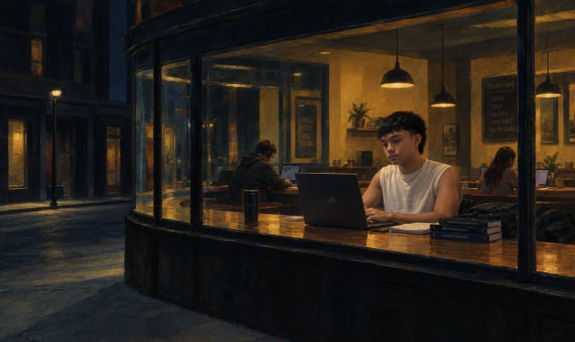
Individual • An AI tool helped me remake a well-known artwork, since the activity asked us to use one. I decided what to change and what to keep.
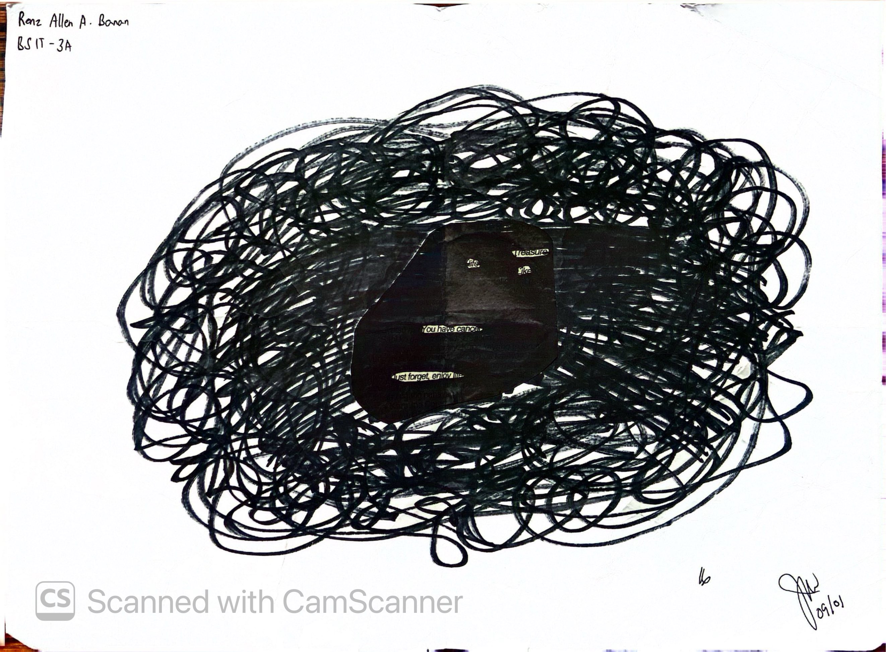
Individual • I took a printed page, inked over most of the words, and left a few behind that read as a short poem of my own.
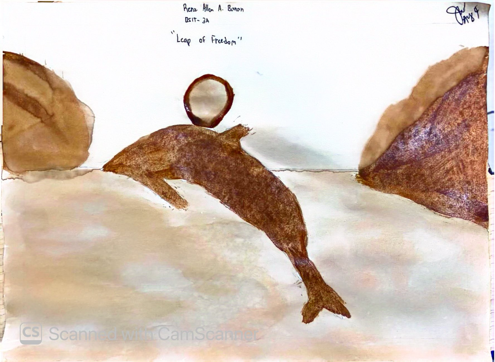
Individual • I painted with brewed coffee instead of regular paint. The brown tones gave the picture a warm, soft feel I could not get from a paint tube.
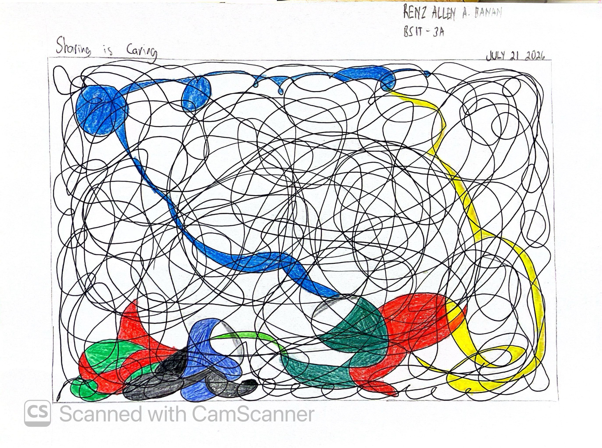
Individual • I began with loose, careless lines, then looked for shapes hiding inside them and colored those in until the page became a real picture.
Group 4 • Our group watched Sunshine and talked through its story, its message, and the way it uses color and images.
Group 4 • Our group joined pictures, music, and written words into one video built around a single idea.
Side B is the work I chose to do outside class: a drawing, two photographs, and a guitar cover. Tap a jacket to see the full work.
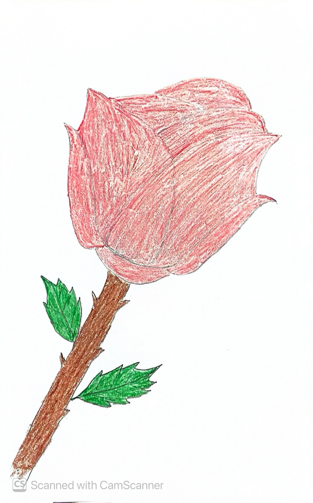
Drawing • Individual
I treated this drawing like a long practice session. I went back over my lines again and again until they felt right, the same way I repeat a guitar riff. It taught me to stay calm when a part does not come out on the first try.
Open Log 01 →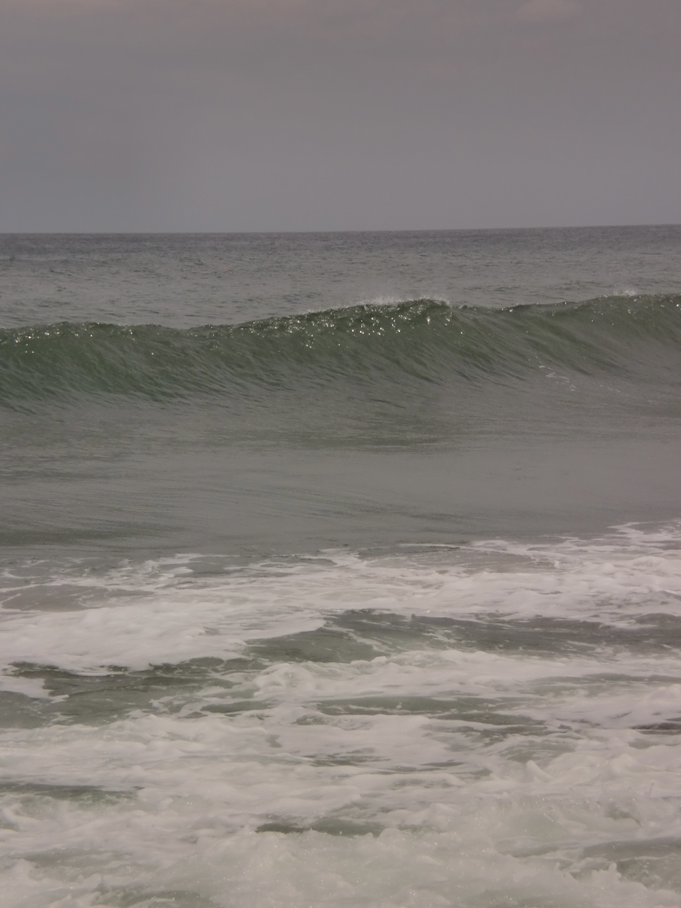
Photography • Individual
Before taking this shot, I stopped and checked where the light was coming from. A small step to the left or right changed the whole mood, so I took my time choosing where to stand. The camera only records what I decide to point it at.
Open Log 02 →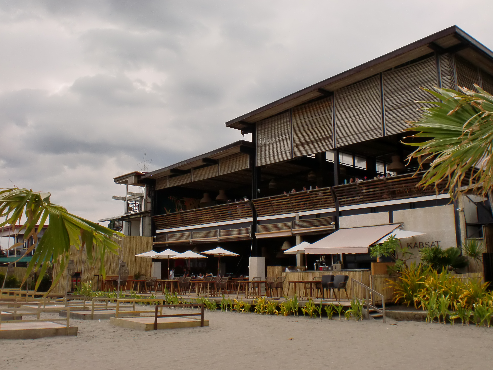
Photography • Individual
My second photo came after I had already tried once, so I knew what to watch for. I checked the edges of the frame, the light, and the mood before pressing the button. Put next to the first, it looks calmer and more settled.
Open Log 03 →Electric guitar cover • Individual
The guitar is the art form I already know best, so this is my one familiar work in Part II. I played a cover on my electric guitar and focused on timing, tone, and how each note feels. Those are the same things I now look for in a drawing or a photograph, and they are where my whole art journey began.
Open Log 04 →Four short answers about what this course did to the way I look at things.
Before this class, I believed art belonged to people with a special talent. The blackout poetry and the coffee painting proved me wrong, because neither one needed a perfect hand. They needed choices. Picking which words to keep felt like picking notes for a melody, and using coffee instead of paint felt like switching instruments. Now when I see a picture, I ask what it is trying to say, the same way I do with a song.
I found out that I can stay with a task longer than I expected. The drawing and the photographs pushed me to redo small parts, which is what I do when a guitar passage will not sound right. The scribble art showed me that a messy start can still turn into something good. I used to give up when something looked wrong. Now I just try another version.
The guitar is part of who I am, and this course showed me that drawing and photography come from the same place: wanting to say something that plain talk cannot. Working with my group on the Sunshine analysis and the multimedia video also taught me to listen. Each member noticed different things in the film, and putting our views together gave us a fuller answer than any one of us had alone.
I plan to keep playing and keep making art, and to let each one feed the other. I want to be the kind of person who looks twice, tries something unfamiliar, and shows work before it feels perfect. This EP is only the first track.
Pictures and links that show how each Side B work was made, following the Side B track order. Tap a picture to enlarge it.
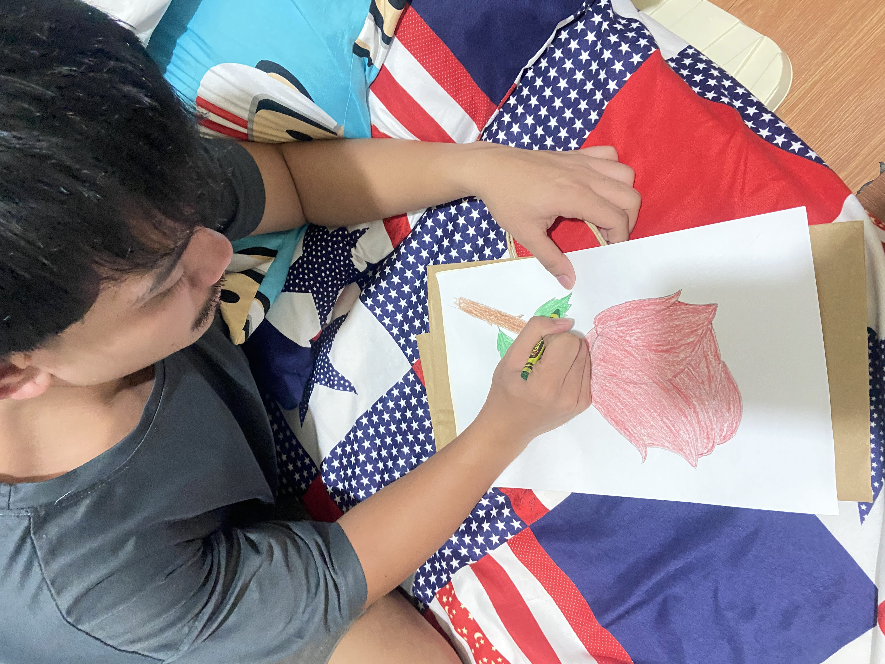
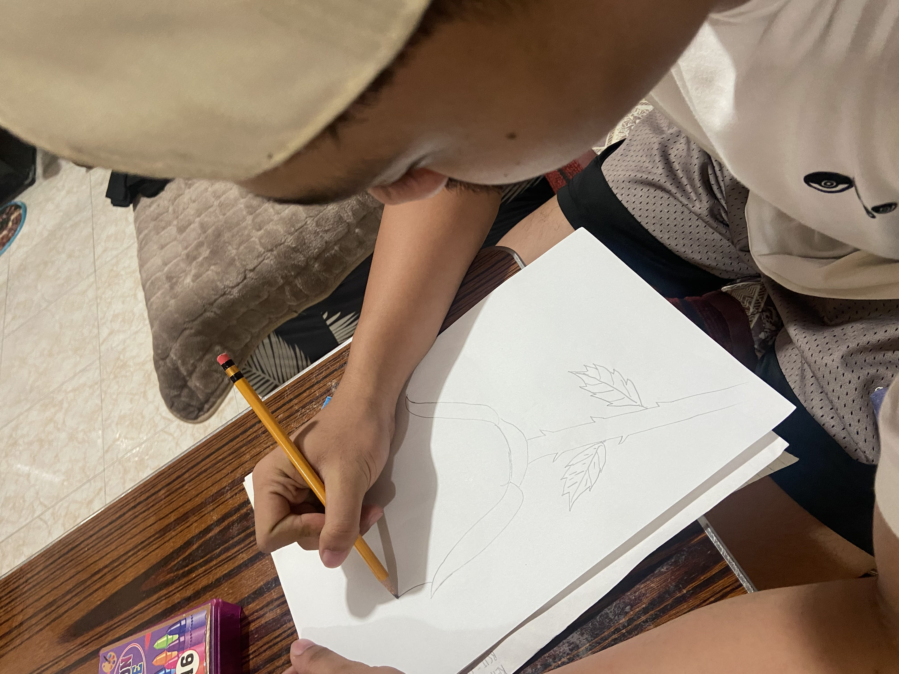
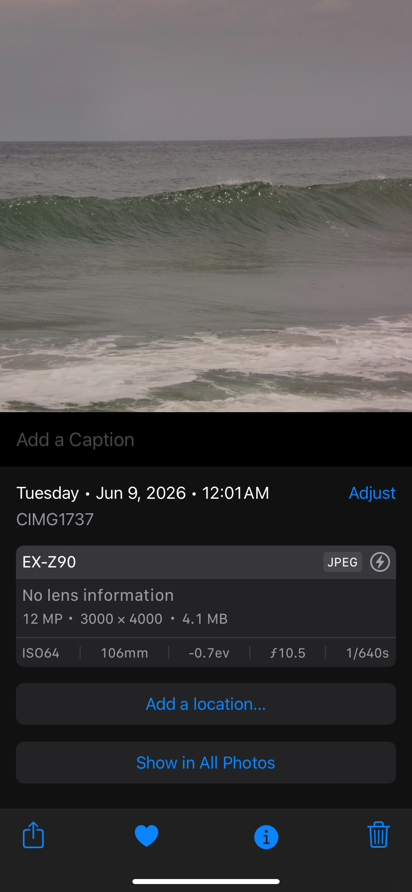
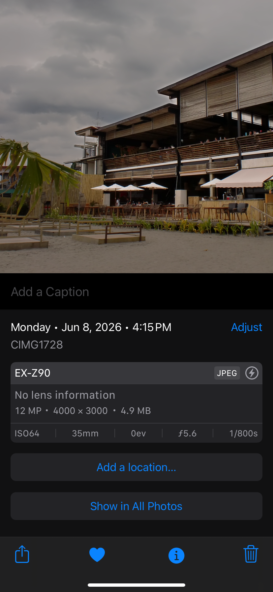